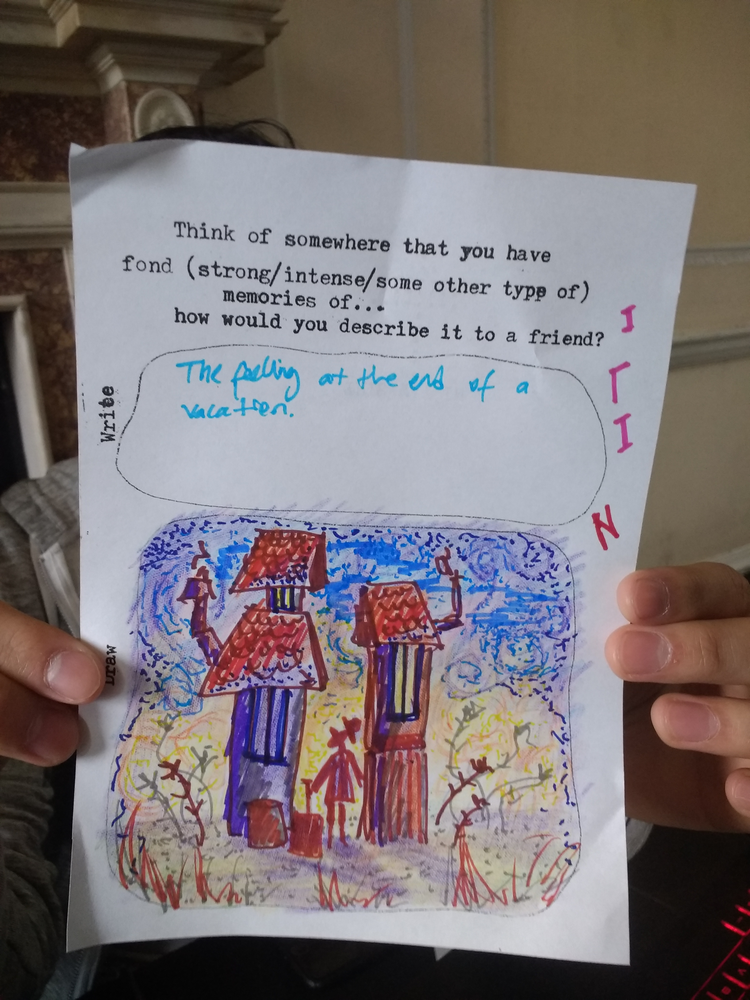
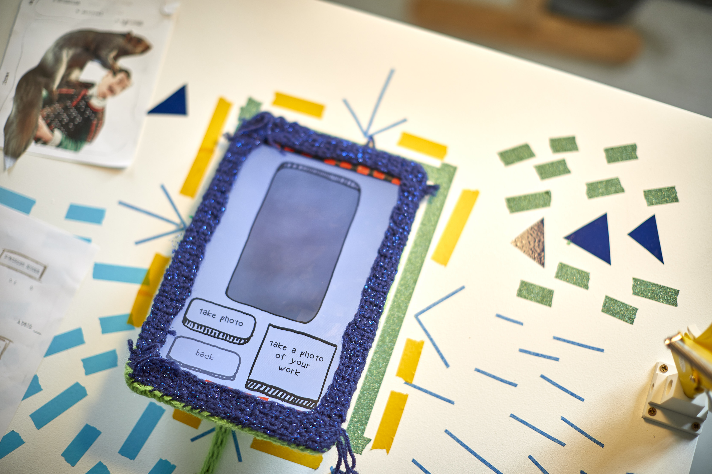

Flatjams are game-jams with a crafty twist. We use craft materials such as felt-tip pens, pom-poms, glue and all sorts of sparkly things to make sprites and game worlds. Narrative and characters are based on personal stories, and often poetic or more like an interactive digital comic book or zine than a traditional platform game. The first annual flatgame jam was held online at itch.io in 2016 by Llaura Dreamfeel.

We made a flatgame installation that was part of Now Play This at Somerset House, and we did a games take over at KWMC, and have run two flatjams IRL: one at the Watershed in Bristol and another in Oakland, California hosted by the Wonderful Ideas Company.



More about flatgames here

